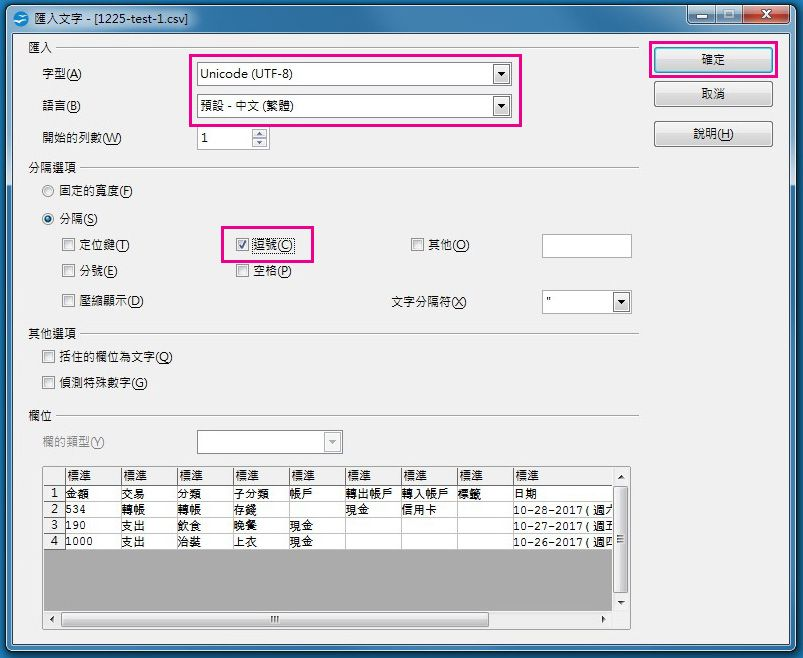
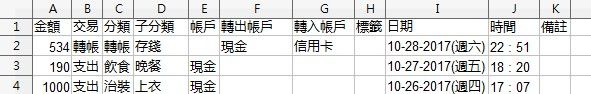
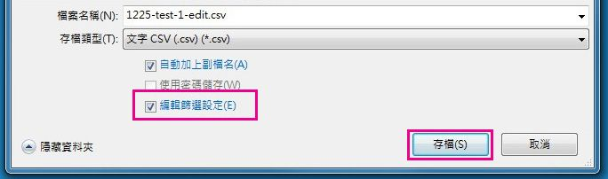
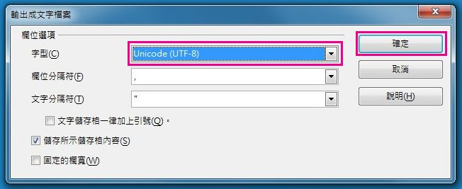

.csv 匯出檔案亂碼
愛記帳匯出的.csv 檔案編碼格式為 UTF-8 (Unicode)，如遇到預設編碼非為 UTF-8 (Unicode) 的編輯器，如 Excel，這樣會導致中文出現亂碼，我們提供以下幾種方式協助您修改編碼。
方式一.使用 Open office 編輯
1. 如無安裝此軟體，可至 OpenOffice 官網下載安裝
2. 在檔案上點擊滑鼠右鍵，將檔案以 Open office 開啟。
3. 字型選擇 "Unicode (UTF-8)"，語言選擇"預設-中文(繁體)"，分隔選項勾選"逗號"，點擊確定。

4. 開啟後如下圖。

5. 如要儲存可匯入回愛記帳的格式，點擊 "檔案 → 另存新檔"。

6. 需勾選"編輯篩選設定"。

8. 輸出成文字檔案，字型選擇"Unicode (UTF-8)"，點擊確定，完成存檔。

方式二. 使用純文字文件修改編碼
1. 在檔案上點擊滑鼠右鍵，將檔案以記事本開啟。
2. 開啟後，點選儲存，關閉檔案再以 Excel 開啟即可正常顯示。
註：使用此方式修改過編碼後的檔案，如要匯入愛記帳，需再改回 UTF-8 (Unicode) 格式。